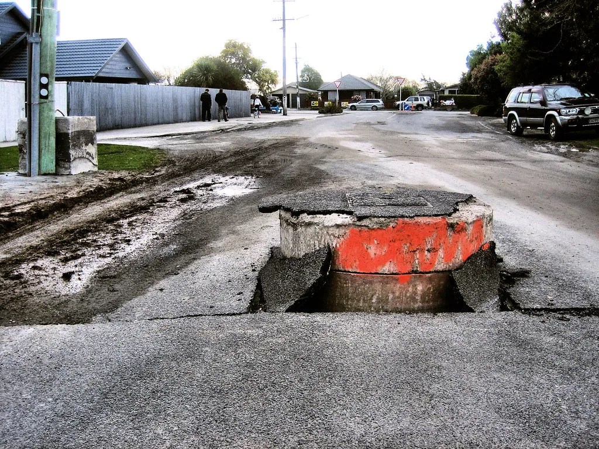

구마모토 강진 사망자 34명으로 급증…폭염 속 여진 공포
지난 28일 일본 규슈 구마모토현을 강타한 규모 7.1의 강진으로 인한 사망자가 34명으로 늘어난 것으로 집계됐다. 지진 발생 사흘째를 넘긴 시점에도 매몰자 수색과 구조 작업이 계속되고 있으며, 폭염 속에서 진행되는 구조 활동에 어려움이 가중되고 있다. 일본 정부는 아직 확인되지 않은 실종자들이 있을 수 있다며 피해 규모가 더 늘어날 가능성을 배제하지 않고 있다. 규슈 지역에서 이 정도 규모의 강진이 짧은 시간에 이만한 인명 피해를 낸 것은 이례적이라는 평가가 나온다.
가장 큰 인명 피해가 발생한 곳은 일본제지 야쓰시로 공장으로, 이곳에서만 8명이 숨진 것으로 확인됐다. 폭발 이후 건물 일부가 붕괴한 대형 쇼핑센터 '이온몰 구마모토'에서도 7명이 사망한 것으로 집계되면서, 두 시설의 피해가 전체 사망자의 상당 부분을 차지하고 있다. 나머지 사망자들은 주택 붕괴와 산사태 등 구마모토현 곳곳에서 산발적으로 발생한 것으로 전해졌으며, 부상자 수도 상당한 규모에 이르는 것으로 알려졌다.

이재민 문제도 심각하다. 구마모토현에 따르면 1만 400여 명이 학교 체육관 등 대피소에서 생활을 이어가고 있다. 여기에 약 2만 3000가구가 지진 여파로 정전을 겪고 있어, 폭염이 이어지는 상황에서도 에어컨과 냉장고를 가동하지 못하는 이중고를 겪고 있는 것으로 전해졌다. 일본 기상당국은 정전 지역을 중심으로 온열질환 위험이 커지고 있다며 대피소와 자택에 머무는 주민 모두에게 각별한 주의를 당부했다.
지진을 일으킨 단층은 여전히 불안정한 상태를 유지하고 있는 것으로 파악된다. 발생 이후 지금까지 300여 차례가 넘는 여진이 이어지고 있어, 이미 손상된 건물이 추가 여진에 무너질 경우 2차 피해로 이어질 가능성도 우려되는 상황이다. 일본 기상청은 앞으로도 상당 기간 강한 여진이 이어질 수 있다며 주민들에게 위험 지역 접근을 자제해달라고 거듭 요청했다.

일본 정부는 자위대와 소방, 경찰 인력을 대거 투입해 구조 작업을 이어가는 한편, 폭염 속 대피소 환경 개선에도 주력하고 있다. 정전 복구 작업과 함께 냉방시설이 갖춰진 임시 대피 공간을 추가로 마련하는 방안도 검토되고 있는 것으로 알려졌다. 다만 여진이 계속되는 탓에 붕괴 위험 지역에 대한 본격적인 복구 작업에 속도를 내기는 쉽지 않은 상황이다.
이번 지진은 인명 피해뿐 아니라 인근 산업시설에도 타격을 준 것으로 파악된다. 지역 내 반도체 공장 일부가 가동에 차질을 빚는 등 생산 차질이 빚어지면서 관련 공급망에 미칠 파급 효과에 대한 우려도 나오고 있다. 일본 정부는 피해 지역에 대한 특별재정지원 등 후속 복구 대책을 조만간 발표할 방침인 것으로 전해졌으며, 이재민 지원과 인프라 복구가 앞으로의 최우선 과제로 꼽히고 있다.
이웃 국가인 한국에서도 이번 강진에 대한 관심이 이어지고 있다. 규슈 지역과 인적·물적 교류가 활발한 만큼 여행 및 출장 계획을 세운 이들의 문의가 늘고 있으며, 정부 차원에서도 필요시 지원 협력 방안을 검토하고 있는 것으로 전해졌다. 전문가들은 이번 지진을 계기로 환태평양 지진대에 위치한 이웃 국가들 역시 지진 대비 체계를 다시 점검해볼 필요가 있다고 지적한다.